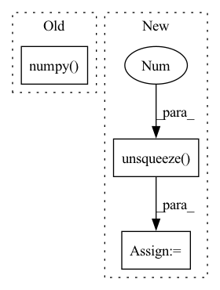

Pattern ID :2945
Before Change
// Cal PSNR
total_psnr += 10. * torch.log10(1. / torch.mean((sr_tensor_y - lr_tensor_y) ** 2))
sr_image_y = sr_tensor_y.mul_(255.0).cpu().squeeze_(0).squeeze_(0).numpy()
sr_image = np.array([sr_image_y, lr_ycbcr[..., 1], lr_ycbcr[..., 2]]).transpose([1, 2, 0])
sr_image = np.clip(imgproc.convert_ycbcr_to_rgb(sr_image), 0.0, 255.0).astype(np.uint8)
sr_image = Image.fromarray(sr_image)
sr_image.save(sr_image_path)After Change
hr_ycbcr = imgproc.convert_rgb_to_ycbcr(hr_image)
hr_y_image = hr_ycbcr[..., 0]
hr_y_image /= 255.
hr_y_tensor = torch.from_numpy(hr_y_image).to(config.device).unsqueeze(0 ) .unsqueeze(0)
hr_y_tensor = hr_y_tensor.half()
// Only reconstruct the Y channel image data.
with torch.no_grad():In pattern: SUPERPATTERN
Frequency: 4
Non-data size: 3
Instances Fragment ID: 11409068
Project Name: lornatang/vdsr-pytorch
Commit Name: 4a9bc788a52873e287460db8207a3c5dd5543870
Time: 2021-11-19
Author: liuchangyu1111@gmail.com
File Name: validate.py
M Class Name: AnonimousClass
N Class Name: AnonimousClass
M Method Name: main(0)
N Method Name: main(0)
M Parent Class:
N Parent Class:
M File Name: validate.py
N File Name: validate.py
M Start Line: 66
M End Line: 84
N Start Line: 66
N End Line: 95
Before Change
// self.pass_generated_images.append(self.target_batch[0].numpy().T.copy())
pass_generated_images.append(
input_reconstruction[0].numpy() .T.copy())
return pass_generated_images
After Change
self.encoder(self.normalized_input_batch)
source_layer = self.encoder_layers[layer_name]
target_batch = vgg_normalization(
self.target_tensor).unsqueeze(0 )
self.encoder(target_batch)
target_layer = self.encoder_layers[layer_name]
target_layer = self.optimal_transport(layer_name, Fragment ID: 11409050
Project Name: mb-29/optimal-textures
Commit Name: 660a52858ea2802b3fd0cfdf3a2f49c0956136da
Time: 2021-01-23
Author: matthieu.blanke@laposte.net
File Name: generator.py
M Class Name: Generator
N Class Name: Generator
M Method Name: generate(2)
N Method Name: generate(2)
M Parent Class:
N Parent Class:
M File Name: generator.py
N File Name: generator.py
M Start Line: 78
M End Line: 106
N Start Line: 76
N End Line: 107
Before Change
a = a[mask]
pred = a
x, y, w, h = pred[:, 0].numpy(), pred[:, 1].numpy(), pred[:, 2].numpy() , pred[:, 3].numpy()
a = w * h // area
ar = w / (h + 1e-16) // aspect ratio
log_w, log_h, log_a, log_ar = np.log(w), np.log(h), np.log(a), np.log(ar)After Change
v = ((pred[:, 4] > conf_thres) & (class_prob > .3))
v = v.nonzero().squeeze()
if len(v.shape) == 0:
v = v.unsqueeze(0 )
pred = pred[v]
class_prob = class_prob[v]
class_pred = class_pred[v] Fragment ID: 11409051
Project Name: nightsnack/yolobile
Commit Name: d41f85702d036528342045f4d7e4d0a1a801ec45
Time: 2018-11-22
Author: nzvi@trigosystems.com
File Name: utils/utils.py
M Class Name: AnonimousClass
N Class Name: AnonimousClass
M Method Name: non_max_suppression(3)
N Method Name: non_max_suppression(3)
M Parent Class:
N Parent Class:
M File Name: utils/utils.py
N File Name: utils/utils.py
M Start Line: 288
M End Line: 342
N Start Line: 296
N End Line: 369
Before Change
return pos_av, phot_sum
Threshold single px values
x_ = x.numpy()
self.matrix_extent = ((-0.5, x_.shape[0] - 0.5), (-0.5, x_.shape[1] - 0.5))
x_[x_ < self.single_val_threshold] = 0
cluster_frame, num_clusters = label(x_, self.kernel)After Change
// loop over all batch elements
if x.dim() == 2:
x_ = x.unsqueeze(0 ) .unsqueeze(0)
clusters = []
Fragment ID: 11409061
Project Name: turagalab/decode
Commit Name: 0265ffe773d360ee51c95c0208a074d7f318620d
Time: 2019-04-12
Author: gitdev@LRM.photo
File Name: deepsmlm/neuralfitter/post_processing.py
M Class Name: ConnectedComponents
N Class Name: ConnectedComponents
M Method Name: forward(2)
N Method Name: forward(2)
M Parent Class:
N Parent Class:
M File Name: deepsmlm/neuralfitter/post_processing.py
N File Name: deepsmlm/neuralfitter/post_processing.py
M Start Line: 177
M End Line: 196
N Start Line: 181
N End Line: 213